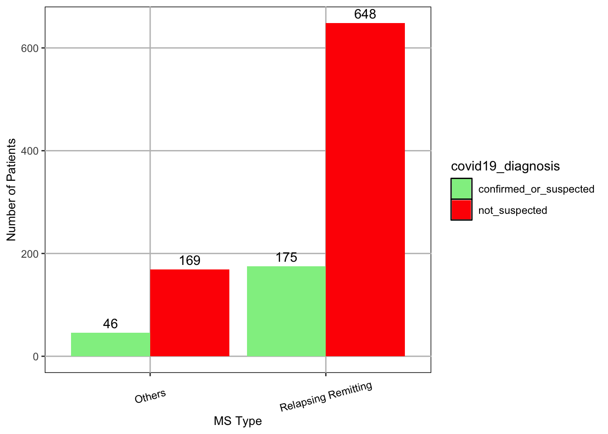
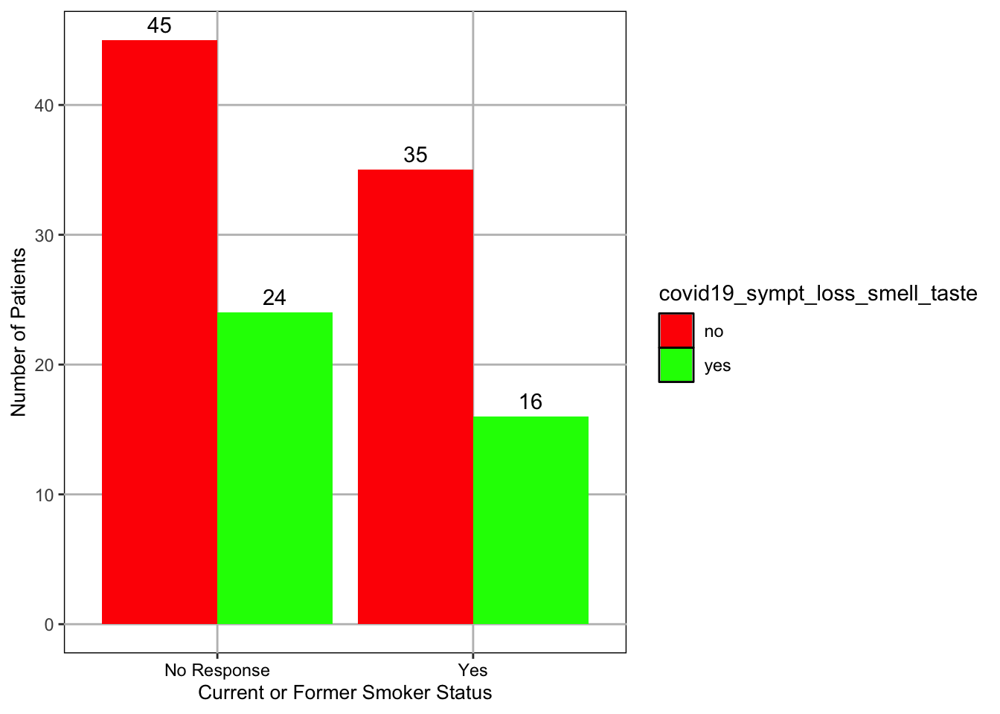

Since the global pandemic in 2020, COVID-19 has influenced everyday life, from shifting social norms surrounding mask wearing to shutting down well-established businesses. However, the biggest concern surrounding COVID-19 has been public safety, and although the rate of spread has leveled out significantly, it is worth identifying which groups still remain most at risk for catching the disease. This statistical analysis aims to determine susceptibility to COVID-19 among people with different types of multiple sclerosis (MS), and risk of COVID-19 symptoms depending on certain habits.
The dataset it uses was collected to study the effects of COVID-19 in people with MS due to their heightened susceptibility to infections and concerns about how the disease interacts with their central nervous system. The data was collected via direct entry into am online platform, done by clinicians, the person with MS being studied, or a representative either in a hospital setting or at home. Although not specified, collection presumably began at the pandemic’s start and was terminated on February 3rd, 2022. It contains information about smoking habits, COVID-19 symptoms, diagnosis, treatment, and whether patients recovered from 1141 people with MS.
The first question we will investigate is if an MS patient’s COVID-19 diagnosis depends on whether they have relapsing-remitting or a different MS type. Importantly, there are three MS types referenced in the dataset: 1) other, 2) progressive, and 3) relapsing-remitting, however, since the majority of entries are from patients with a relapsing-remitting MS type, we will be combining other and progressive into one collective “others” category for sake of comparison. Similarly, since there are three COVID-19 diagnosis categories: 1) confirmed, 2) suspected, and 3) not suspected, and the majority of entries are from patients not_suspected, we will combine confirmed and suspected into a collective “confirmed_or_suspected” category. Since people with the relapsing-remitting MS phenotype typically experience more immunodeficiencies compared to other phenotypes, we expect them to be more susceptible to diseases such as COVID-19 (Segal 2014). Thus, we expect a greater prevalence of confirmed or suspected cases among the relapsing-remitting group compared to the others group.
The second question we will investigate is does an MS patient’s status as a current or former smoker increase their likelihood of experiencing the COVID-19 symptom of loss of taste or smell. Let us note that smoking damages olfactory tissue, which makes the user less susceptible to smells and puts them at a higher risk of losing their sense of smell (Gurgel, et al. 2018). Thus, we should expect the COVID-19 symptom of losing one’s sense of smell (or taste since they’re grouped together) will be more prevalent among current or former smokers. However, among entries, patients either reported their status as a current or former smoker as “yes” or left the question blank (presumably because they either felt embarrassed or did not feel the need to answer the question). Thus, we will be comparing those who reported their status as “yes” to those who left the question unanswered. Also, we will filter the dataset to exclude those who did not answer “yes” or “no” to having experienced the COVID-19 symptom of loss of taste or smell. This will be done since loss of taste or smell is the dependent variable and there is no meaningful information to derive if left unanswered.
Statistical Test 1
Null Hypothesis: An MS patient’s COVID-19 diagnosis does not depend on whether they have relapsing-remitting or a different MS type.
Alternative Hypothesis: Patients with a relapsing-remitting MS type are more likely to contract COVID-19 (have a confirmed or suspected case) than other MS types.
Set up
#Clear the environmentrm(list =ls())#Load in packageslibrary(tidyverse)
── Attaching core tidyverse packages ──────────────────────── tidyverse 2.0.0 ──
✔ dplyr 1.1.4 ✔ readr 2.1.5
✔ forcats 1.0.0 ✔ stringr 1.5.1
✔ ggplot2 3.5.1 ✔ tibble 3.2.1
✔ lubridate 1.9.3 ✔ tidyr 1.3.1
✔ purrr 1.0.2
── Conflicts ────────────────────────────────────────── tidyverse_conflicts() ──
✖ dplyr::filter() masks stats::filter()
✖ dplyr::lag() masks stats::lag()
ℹ Use the conflicted package (<http://conflicted.r-lib.org/>) to force all conflicts to become errors
library(here)
here() starts at /Users/ebar/Library/CloudStorage/OneDrive-St.LawrenceUniversity/Classes/Biostats/Biostats F24/Student Work/R Projects/CapDAP/Stasio-Capstone-Project
library(ggfortify)
Load in the cleaned dataset
Steps 1 and 2 of the course’s data analysis workflow (ensuring the data is entered correctly, constructing visualizations of the data, and repairing data as needed) were completed prior and saved as the dataset that will be loaded in. Changes to the dataset are documented in the metadata file.
#Combine the suspected and confirmed casesfix <-which(covid$covid19_diagnosis %in%c("confirmed","suspected"))covid$covid19_diagnosis[fix] <-"confirmed_or_suspected"#Combine the Other and Progressive_MS typesfix2 <-which(covid$ms_type %in%c("progressive_MS", "other"))covid$ms_type[fix2] <-"Others"#Gather counts of confirmed COVID-19 diagnosis (confirmed, suspected, or not suspected) by MS typecounts_ms_type <- covid |>group_by(ms_type, covid19_diagnosis) |>summarize(count =length(ms_type) )
`summarise()` has grouped output by 'ms_type'. You can override using the
`.groups` argument.
#Create a bar graph to view counts of confirmed COVID-19 diagnoses (confirmed, suspected, or not_suspected) by MS typeggplot(counts_ms_type, aes(x = ms_type, y = count, fill = covid19_diagnosis)) +geom_bar(stat ='identity', position ='dodge') +scale_fill_manual(values =c("confirmed_or_suspected"="lightgreen", "not_suspected"="red")) +geom_text(aes(label = count), position =position_dodge(width =0.9), vjust =-0.5) +xlab("MS Type") +ylab("Number of Patients") +scale_x_discrete(limits =c("Others", "relapsing_remitting"),labels =c("Others", "Relapsing Remitting")) +theme(legend.key =element_rect(fill =NA),axis.title.x =element_text(size =10), axis.title.y =element_text(size =10), axis.text.x =element_text(angle =15, vjust =0.5, colour ="Black"),panel.background =element_rect(fill =NA, colour ="black"),panel.grid.minor =element_blank(),panel.grid.major =element_line(colour ="gray") )

Based on the plot, the ratio of not_suspected to confirmed_or_suspected cases across the two groups appears very similar (648:175 for relapsing-remitting and 169:46 for others). Thus, we expect the null hypothesis to hold true. This means it is reasonable to assume an MS patient’s COVID-19 diagnosis should not depend on whether they have relapsing-remitting or a different MS type. Since we have a categorical predictor variable and categorical response variable, a chi-square test of association (test of independence) is appropriate.
Conduct a chi-square test of association
# Transform the dataframe into a matrixcovid.mat <-xtabs(count ~ ms_type + covid19_diagnosis, data = counts_ms_type)# Run the chi-square testchisq.test(covid.mat)
Pearson's Chi-squared test with Yates' continuity correction
data: covid.mat
X-squared = 6.6441e-31, df = 1, p-value = 1
#Access the specifics of the chi-squared testcovid.chi <-chisq.test(covid.mat)names(covid.chi)
The results of this Chi-squared test show an MS patient’s COVID-19 diagnosis does not depend on their MS type, relapsing-remitting or other (X-squared = 6.441e-31, df = 1, p-value = 1). Since we get a p-value of exactly 1, our observed results are, in theory, entirely due to chance. Thus, despite experiencing more immunodeficiencies, people with the relapsing-remitting MS type are no more (or less) susceptible to contracting COVID-19 than other MS types according to these results. The sample size is fairly large, so even if it were increased, we would likely observe the same results. The differences in immune system response in relapsing-remitting versus other MS types is irrelevant when infected with COVID-19, potentially because the disease interacts with the body in ways that render all types equally susceptible. Age is also another consideration with these results. Typically, older populations are at higher risk of contracting COVID-19, and since MS patients have life spans roughly 5-10 years shorter than the general population, it may be that age is the more significant predictor of a confirmed_or_suspected case and differences in susceptibility are masked until a certain age is reached. If this were the case, most patients likely were not past this age as relapsing-remitting and other MS types present themselves around ages 20-40 (Romero-Pinel, et al. 2022).
Closing Remarks
At this point in the course’s data analysis workflow, we would construct another plot to more clearly convey our results (e.g. with error bars, etc.) if there was statistically significant information. However, since we determined our results are entirely due to chance, we can skip constructing this plot. Our results support the null hypothesis that an MS patient’s COVID-19 diagnosis does not depend on whether they have relapsing-remitting or a different MS type (X-squared = 6.441e-31, df = 1, p-value = 1).
Statistical Test 2
Null Hypothesis: There is no relationship between an MS patient’s status as a current or former smoker and their likelihood of experiencing the COVID-19 symptom of loss of taste or smell.
Alternative Hypothesis: Those who identify as current or former smokers will experience the COVID-19 symptom of loss of taste or smell at a higher rate than those who left the question unanswered.
Set up
#Clear the environmentrm(list =ls())#Load in packageslibrary(tidyverse)library(here)library(ggfortify)library(oddsratio) #converts log odds to odds ratios
Load in the cleaned dataset
Steps 1 and 2 of the course’s data analysis workflow (ensuring the data is entered correctly and constructing visualizations of the data, repairing data as needed) were completed prior and saved as the dataset that will be loaded in. Changes to the dataset are documented in the metadata file.
# Filter the dataset to exclude patients that left the question of experiencing the COVID-19 symptom of loss of taste or smell unanswered covid_filtered <-filter(covid, covid19_sympt_loss_smell_taste ==c("yes", "no"))#Gather counts of confirmed loss of taste or smell symptoms (Yes or No), by current or former smoker status (Unanswered or no)counts_smoker_status <- covid_filtered |>group_by(current_or_former_smoker, covid19_sympt_loss_smell_taste) |>summarize(count =length(covid19_sympt_loss_smell_taste) )
`summarise()` has grouped output by 'current_or_former_smoker'. You can
override using the `.groups` argument.
#Create a bar graph to view counts of confirmed loss of taste or smell symptoms (Yes or No) by current or former smoker status (Yes or Unanswered)ggplot(counts_smoker_status, aes(x = current_or_former_smoker, y = count, fill = covid19_sympt_loss_smell_taste)) +geom_bar(stat ='identity', position ='dodge') +scale_fill_manual(values =c("yes"="green", "no"="red")) +geom_text(aes(label = count), position =position_dodge(width =0.9), vjust =-0.5) +xlab("Current or Former Smoker Status") +ylab("Number of Patients") +scale_x_discrete(limits =c("Unanswered", "yes"),labels =c("No Response", "Yes")) +theme(legend.key =element_rect(fill =NA),axis.title.x =element_text(size =10), axis.title.y =element_text(size =10), axis.text.x =element_text(colour ="Black"),panel.background =element_rect(fill =NA, colour ="black"),panel.grid.minor =element_blank(),panel.grid.major =element_line(colour ="gray") )

Based on the plot, it appears the COVID-19 symptom of loss of taste or smell is experienced at a higher rate by those who left their status as a current or former smoker unanswered compared to those who said yes, which is the opposite of what we anticipated. Thus, we can expect to reject the null hypothesis in favor of an alternative hypothesis that differs from the one proposed: Those who identify as current or former smokers will experience the COVID-19 symptom of loss of taste or smell at a lower rate than those who left the question unanswered. The reasoning behind this is likely that the “Unanswered” group encompasses people who experienced the COVID-19 symptom and were current or former smokers but did not identify themselves as such. This statistical test would be more reliable if patients were required to answer questions rather than having the option to leave them blank as it allows room for ambiguity (it also greatly shrinks the sample size from 1142 to 120). Since our predictor variable, current or former smoker status, is binary and our response variable, experiencing the COVID-19 symptom of loss of taste or smell, is also binary, we will proceed by conducting a logistic regression.
Adjust and fit the model
Set experiencing the COVID-19 symptom of loss of taste or smell = 1 and not experiencing the symptom = 0.
#Add new column to the dataset (ltos = loss of taste or smell)covid_filtered$sympt_ltos_code <-NA#Set yes to correspond to 1 and no to correspond to 2yes <-which(covid_filtered$covid19_sympt_loss_smell_taste =="yes")covid_filtered$sympt_ltos_code[yes] <-1no <-which(covid_filtered$covid19_sympt_loss_smell_taste =="no")covid_filtered$sympt_ltos_code[no] <-0
Fit a generalized linear model
covid.mod <-glm(sympt_ltos_code ~ current_or_former_smoker, family ="binomial", data = covid_filtered)summary(covid.mod)
Call:
glm(formula = sympt_ltos_code ~ current_or_former_smoker, family = "binomial",
data = covid_filtered)
Coefficients:
Estimate Std. Error z value Pr(>|z|)
(Intercept) -0.6286 0.2528 -2.487 0.0129 *
current_or_former_smokeryes -0.1542 0.3936 -0.392 0.6954
---
Signif. codes: 0 '***' 0.001 '**' 0.01 '*' 0.05 '.' 0.1 ' ' 1
(Dispersion parameter for binomial family taken to be 1)
Null deviance: 152.76 on 119 degrees of freedom
Residual deviance: 152.61 on 118 degrees of freedom
AIC: 156.61
Number of Fisher Scoring iterations: 4
For this output, the coefficients indicate the average change in log odds of an MS patient experiencing the COVID-19 symptom of loss of taste or smell (yes = 1) with each increase in the number of patients with histories as current or former smokers. A 1 unit increase in the number of current or former smokers decreases the log odds of a MS patient experiencing the COVID-19 symptom of loss of taste or smell by 0.1542.
To further analyze this information, let’s calculate an odds ratio
The odds ratio for current_or_former_smoker (when indicated as yes) = 0.857, which means that, for every 1 unit increase in the number of people with histories as current or former smokers, the odds that they will experience the COVID-19 symptom of loss of taste or smell is 0.857. This number is fairly close to 1, meaning it is not any more likely or unlikely that a person will experience the COVID-19 symptom of loss of taste or smell, perhaps slightly less likely. Despite our initial guess, we cannot conclude statistical significance (oddsratio = 0.857). As mentioned, this is likely due to discrepancies in the data (patients leaving their status as a current or former smoker unanswered could mean either yes or no and thus we cannot be confident our assessment is completely accurate).
Closing Remarks
At this point in the course’s data analysis workflow, we would construct another plot to more clearly convey our results (e.g. with error bars, etc.) if there was statistically significant information. However, since we determined our results are not statistically significant, we can skip constructing this plot. Our results support the null hypothesis that there is no relationship between an MS patient’s status as a current or former smoker and their likelihood of experiencing the COVID-19 symptom of loss of taste or smell (oddsratio = 0.857).
Challenges
This project, by nature of being based around a real, inherently imperfect dataset, posed many challenges that required innovative thinking and logical solution construction. For example, in the data exploration step, I discovered the majority of patients had an MS type of relapsing-remitting, and the majority of COVID-19 diagnosis were labeled “not suspected.” This caused the Chi-square test aiming to answer the first question to be unreliable due to comparing too few data points, so I made the decision to combine confirmed and suspected cases as well as combine MS types other than relapsing-remitting into one category. This allowed for proper comparison and a Chi-squared test with enough data points among compared categories to be reliable.
Furthermore, I came to a similar revelation that I needed to alter the dataset when investigating the second question. I needed to filter based on the response variable (experiencing the COVID-19 symptom of loss of taste or smell) since the absence of data for it was of no use to the analysis. I made the decision to remove all data where that field was left empty. I also had to acknowledged that the analysis could not be as conclusive as I would hope since patients either claimed their status as a current or former smoker to be yes or left the question unanswered (which could be yes or no).
Analysis of the second question also involved me learning about a topic we did not cover in the core curriculum, logistic regression. However, given the statistical foundation we have been building in this course, I was able to conduct the test smoothly. Additionally, I learned a new markdown feature to make the word “lower” appear bold and italicized, emphasizing its importance. For readability, I also used online resources to teach myself how to make the subheadings (the ones using 4 hashtags) green when the file is rendered as an html by utilizing a css file.
The only challenge I faced during this project that I could not solve is finding a 3rd statistical analysis to run that made sense in context of my investigation. I spent time searching for another related dataset, one containing continuous data I could analyze because none of the data in the chosen dataset was continuous, but given this topic is niche, I could not find it. However, since I was able to successfully run a logistic regression and implement new features we did not cover in the course, I’m confident I could analyze continuous data in new ways when faced with datasets requiring it in the future.
Sources:
Da Ré AF, Gurgel LG, Buffon G, Moura WER, Marques Vidor DCG, Maahs MAP. Tobacco Influence on Taste and Smell: Systematic Review of the Literature. Int Arch Otorhinolaryngol. 2018 Jan;22(1):81-87.
Romero-Pinel, Lucía, et al. “The Age at Onset of Relapsing-Remitting Multiple Sclerosis Has Increased over the Last Five Decades.” Multiple Sclerosis and Related Disorders, vol. 68, Dec. 2022, p. 104103. PubMed, https://doi.org/10.1016/j.msard.2022.104103
Segal, B. M. (2014). Stage-specific immune dysregulation in multiple sclerosis. Journal of Interferon & Cytokine Research: The Official Journal of the International Society for Interferon and Cytokine Research, 34(8), 633–640. https://doi.org/10.1089/jir.2014.0025